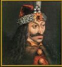

- turks -
He justly impaled those who betrayed church and country. . His father, king of Walachia, belonged to the Order of the Dragon and was sworn to protect the church from the Ottoman Turks. Occasionally he would nail their hats to their heads, but his favorite method of dispatching humans was by impaling them on a stake. Throughout his childhood, Vlad Dracula was periodically held hostage by the sultan of neighboring Turkey to keep Vlad's father from invading.
Click here for PRINCE DRAKUL STORIES and for tips on how to FOOL A VAMPIRE. . Membership in the order meant an oath to fight the Turks (forever) and yet the whole Dracula family flirted with the Turks as well as killing them. Vlad father killed December 1447 by henchmen of John Hunyadi . a lose relative NOT prone to flirting with the Turks Prince Vlad Tepes the 5th of Wallachia (1431-1476 .
|
His real education began in 1436 after his father succeeded in claiming the Wallachian throne and killing his Danesti rival. His training was typical of that common to the sons of the nobility throughout Europe. His first tutor in his apprenticeship to knighthood was an elderly boyar who had fought under the banner of Enguerrand de Courcy at the Battle of Nicolopolis against the Turks. Dracula learned all the skills of war and peace that were deemed necessary for a Christian knight. The political situation in Wallachia remained unstable after Vlad Dracul seized the throne in 1436.
|  |
His real education began in 1436 after his father succeeded in claiming the Wallachian throne and killing his Danesti rival. His training was typical to that common to the sons of the nobility throughout Europe. His first tutor in his apprenticeship to knighthood was an elderly boyar who had fought under the banner of Enguerrand de Courcy at the battle of Nicolopolis against the Turks. Dracula learned all the skills of war and peace that were deemed necessary for a Christian knight. The power of the Turks was growing rapidly as one by one the small states of the Balkans surrendered to the Ottoman onslaught.
also look at: http://www.britannia.com/history/arthur/kageneral.html
.